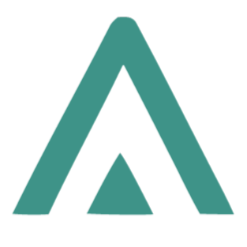
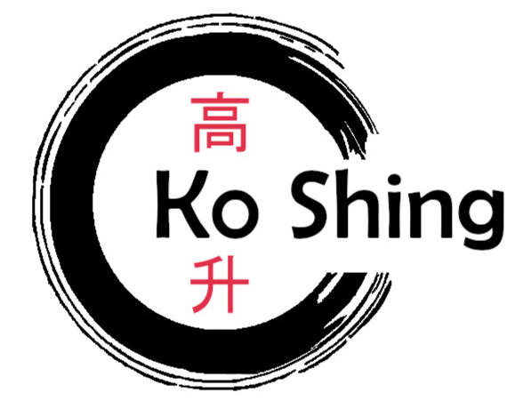
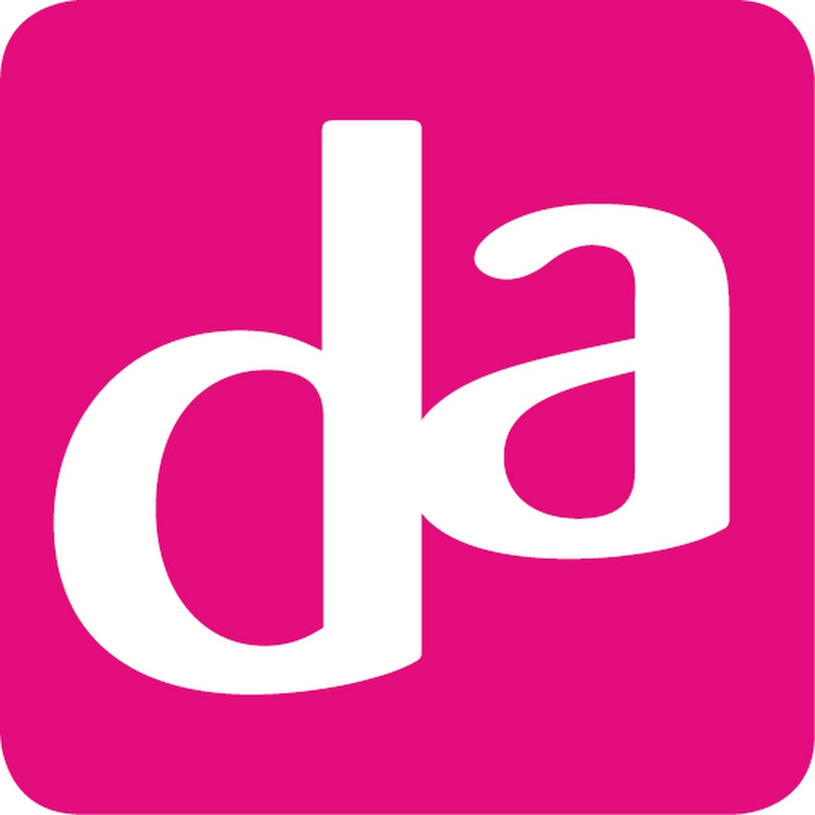

Intro
I'm a highly motivated software engineer with experience in designing and delivering scalable, efficient software solutions. Bringing a strong blend of technical expertise and problem-solving skills, I excel at understanding complex challenges and translating them into reliable, user-friendly applications. Passionate about Agile methodologies and Scrum practices, I am eager to contribute to collaborative, iterative development processes that enhance team productivity and product quality. Committed to continuous learning and innovation, I aim to contribute effectively to your team and help drive your company’s success.Education
-
University of applied sciences (ongoing)
Software engineering - Hogeschool Windesheim Zwolle | 2023-2027
-
Highschool certificate
Havo - Meander College Zwolle | 2021-2023
-
highschool certificate
Mavo - Meander College Zwolle | 2017-2021
Certifications
-
Franklin Covey
7 Habits of Highly Effective People 4.0
Working experience
-

Lead Developer
Aresis | 2026 - present
-

Restaurant staff
Ko shing Zwolle | 2022 - present
-
Codeglass internship
CodeGlass Zwolle | Oct 2025 - jan 2026
-
Web development internship
Djurve Zwolle | 2025 april - june
-
Bread department
Jumbo Holtenbroek | 2022 feb - sept
-

Warehouse employee
DA logistics Zwolle | 2020 - 2021
Capabilities
-
Languages
Dutch B2 (native), English B2
-
Programming languages
HTML, CSS, C#, C++, Java, JavaScript, TypeScript, SQL, PHP
-
Libraries & Frameworks
Node.js
-
Tools
Git, Azure devops NPM, Illustrator, Figma, Drawio, Visual Paradigm, Balsamiq
My characteristics
- Strong interest in Scrum and Agile practices
I actively study Scrum and understand how structure and collaboration contribute to successful software projects. - Hands-on mindset
I prefer learning by doing. I enjoy working on real projects and getting involved directly. - Curious and eager to learn
I'm always exploring new technologies and looking for ways to grow as a developer. - Team-oriented communicator
I value clear communication and enjoy working in teams where collaboration is key. - Structured thinker
I like logic, clarity, and organization. both in code and in planning. - Future-focused
I aim to build solutions that are not only functional but also scalable and maintainable. - Quality-driven
I care about writing clean code, following best practices, and maintaining good documentation. - Positive work attitude
I am enthusiastic, motivated, and always looking for opportunities to improve. - International mindset
Studying in the Netherlands and working in English have made me comfortable in international environments. - Strong sense of responsibility
I take ownership of my work and follow through on commitments in both projects and teamwork.
References
Jason Li - manager Ko Shing
Kollin has worked with us as a restaurant employee and has consistently shown himself to be reliable,
hard-working, and
customer-oriented. In a dynamic and sometimes high-pressure environment, he remained calm,
professional, and focused on
providing excellent service to our guests.
His responsibilities included taking orders, serving food and drinks, managing the cash register,
and ensuring a clean
and organized workspace. Kollin quickly adapted to the fast pace of the job and worked efficiently
both independently
and as part of the team. He was always willing to help colleagues and took initiative when things
needed to be done,
often without having to be asked.
One of Kollins greatest strengths is his ability to stay composed and friendly, even during peak
hours. He communicates
clearly with both guests and colleagues and contributes to a positive atmosphere in the workplace.
I am confident that the professional attitude, reliability, and work ethic Kollin has shown in the
hospitality industry
will serve him well in any future position or field of work.
Interests
In my free time, I enjoy staying active and challenging myself physically. I have a background in kickboxing and soccer, and nowadays I regularly go to the gym to maintain my fitness. Besides sports, I’m passionate about creating my own programming projects, which allows me to explore new technologies and improve my coding skills. I also enjoy gaming, as it helps me relax.